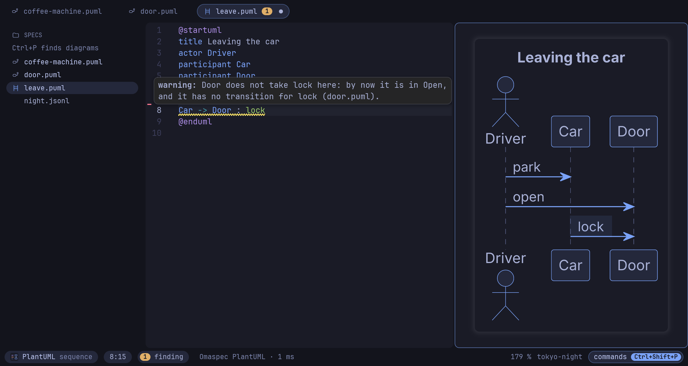
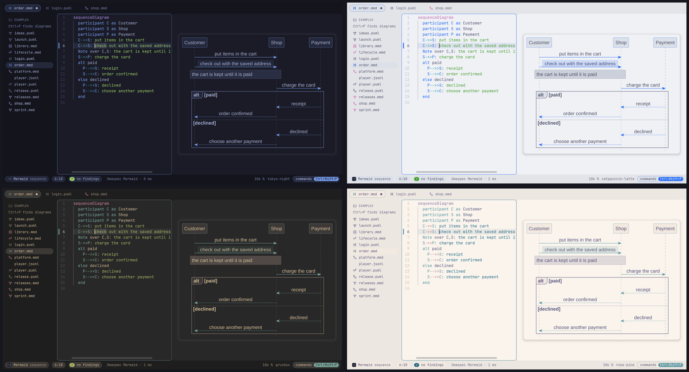
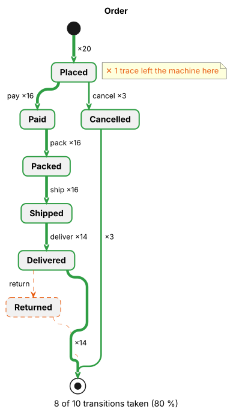
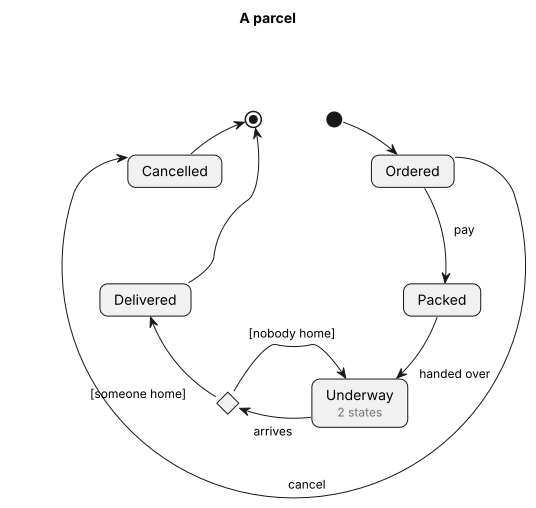
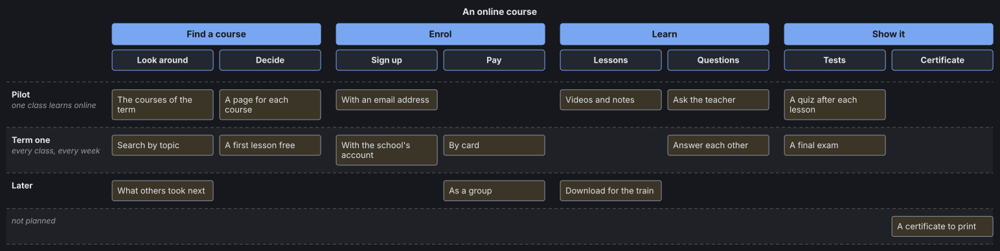
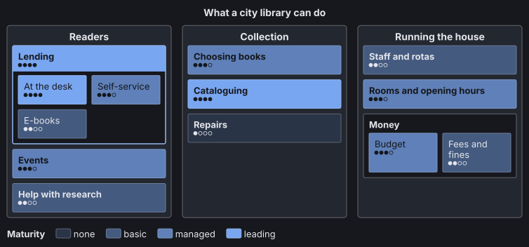
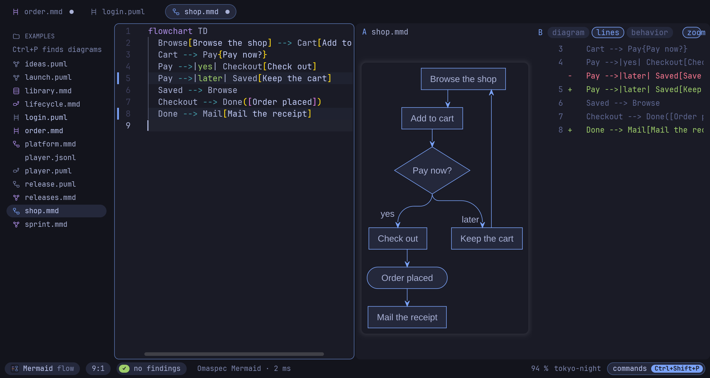

Omaspec is a native PlantUML and Mermaid editor that reads your diagrams as behavior: it checks them while you type, plays them, and holds what a running system logged against them.
PlantUML and Mermaid, drawn by Omaspec's own engines in a few milliseconds. No Java, no browser, no server.
Sequence, activity, state, class, component, use case, deployment, timing and Gantt diagrams, mind maps, WBS, JSON, C4, network diagrams, railroads and more, and Mermaid's flowcharts, state and sequence diagrams: all native.
A Ctrl+click in the picture jumps to its line. Drag a line or a box with Alt and the layout you made stays in the file.
A state no path reaches, a state nothing leaves, one event leading two ways with no guard to choose. Many findings come with a fix: Ctrl+. makes it.
A sequence diagram is checked against the state machines of its project: every message must be an event its receiver can take, in the order the scenario sends them.

The editor and the diagrams follow omarchy theme and omarchy font set live. Every bundled theme is tested to read: each text at 4.5:1, each line at 3:1.
A Hyprland binding, a menu entry and a preview window for Neovim users come with it.

A state diagram is the state machine it specifies, a sequence diagram a scenario. Omaspec treats them that way, in both languages alike.
The states the machine is in light up, you pick what happens next, and a light runs along each transition. This one is live: click an option under it, or press 1 to 9, ← to go back.
omaspec render machine.puml -o talk.html writes exactly this page.
A sequence diagram plays beside the state machines of its participants. As a message reaches its receiver, that machine takes the transition it fires.
A message the machine cannot take runs red: the scenario and the spec disagree, and you see where.
omaspec trace run.jsonl plays what a running system logged through its state machines and says where it deviated, with the time.
Here a week of orders flows through the machine, each order a dot. A transition glows the more dots pass it; a dot turns red where its trace left the machine.

omaspec coverage --river
omaspec orbit, omaspec matrixA diagram is shown, not only read. Every page here is one file that fetches nothing: mail it, put it in a pull request, open it offline.
Shift+F5 puts the diagram full screen and plays it with a presenter's remote. Your editor window becomes the speaker's: the comments above each step are your notes, with the clock and what comes next.
Or hand the talk on as a page. Step through this scenario with → or Space.
Every commit of a diagram glides into the next. What came glows green, what changed amber, what went fades red.
omaspec play door.puml --from v1.0 -o change.html shows a reviewer the way from one release to now.
A project's map is made from its diagrams: a tile for each, an arrow where a state of one opens another. omaspec export DIR --html writes it as this page; in the editor a click dives in the same way.
omaspec play writes a play, a fold, a dive or a flight as GIF, WebP, animated PNG or a page in vectors.
--themes sweeps one diagram through Omarchy's themes, each wiping over the one before.
--ink draws the diagram as with a pen, then inks it clean. Or keep the hand-drawn look for good.
Headings stay in sight as a long diagram scrolls; a PNG too large for one file is cut into tiles.
Three kinds neither PlantUML nor Mermaid has, in a syntax as plain as theirs. They follow your theme like every other diagram.


Signal flow (@startflow) is the third: blocks that receive and send named signals, wired port to port, with subsystems inside.
Everything the editor understands is a command: for a terminal, a pre-commit hook, a pipeline, or an agent.
omaspec diff compares two versions, or a file with its last commit, by states, transitions and messages. Layout and colors do not count.
omaspec git setup lets git diff and git log -p tell diagrams the same way. In the editor, Compare shows the change as pictures, as lines, or as a glide.

$ omaspec lint door.puml # findings with their lines; --fix makes the sure ones $ omaspec check . # a whole project for CI: lint, machines, links, pictures $ omaspec trace night.jsonl # a recorded trace against the state machines $ omaspec coverage door.puml --traces night.jsonl # what the traces take of it $ omaspec diff door.puml # what changed in the behavior since the last commit $ omaspec refs Open # where a state or an event is used; rename changes all $ omaspec convert door.puml # the machine in Mermaid, only if it means the same $ omaspec render door.puml -o door.pdf # SVG, PNG, PDF or a page; the source inside $ omaspec export . --html # the project as one page $ omaspec mcp # an MCP server for AI agents
omaspec mcp serves the command line's tools over MCP. An agent lints a diagram, holds a trace against it and gets a picture back to look at.
Exports carry their source: an SVG, PNG or PDF dropped on Omaspec opens as a diagram again. Every picture is sanitized first.
A document's diagram blocks are drawn beside it, and exported with it.
On Omarchy or any Arch Linux, from the repository. Elsewhere, the binary of the latest release or a build with Rust.
git clone https://github.com/enhapu-afk/omaspec cd omaspec/packaging/aur/omaspec-bin makepkg -si
git clone https://github.com/enhapu-afk/omaspec cd omaspec cargo build --release -p omaspec-app
The guide as a PDF: 49 pages, every function with examples Omaspec drew itself.
Or take the binary from the latest release. Then omaspec door.puml opens the editor and Ctrl+Shift+E the gallery of 47 examples.